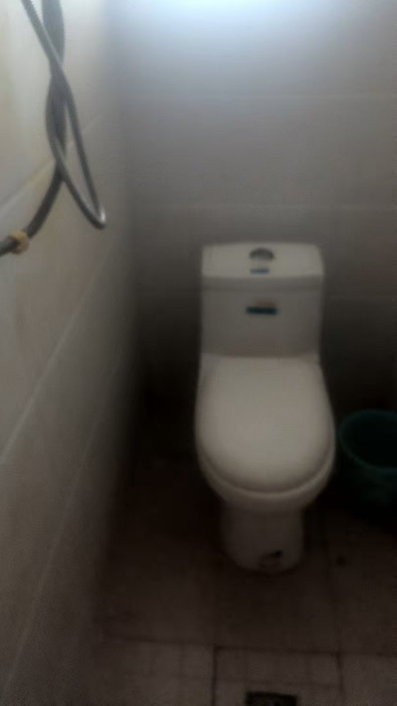
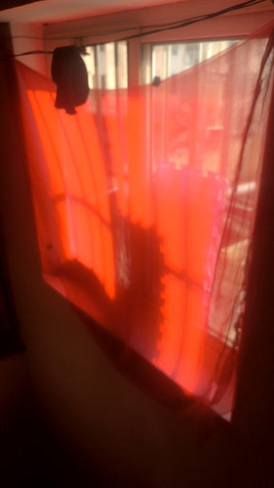

寒涟漪
@HANLIANYI331
上海市宝山区丰水宝坻西苑78号楼一个房屋寻求转租，本消息的有效期截止到6月7日（退租需要提前一个月和房东说明，转租人今天想退租，如果到6月7日没有转租成功会直接退租）
房租：700元
押金：700元
电费：1.5元一度电
房屋类型：合租房（一个卧室）
房屋面积：约20平米
独立卫生间，共用厨房、洗衣机
租赁时间：灵活租赁，但是退租前需要提前一个月和房东说明
转租当事人联系方式：hanahana2333333（微信）

